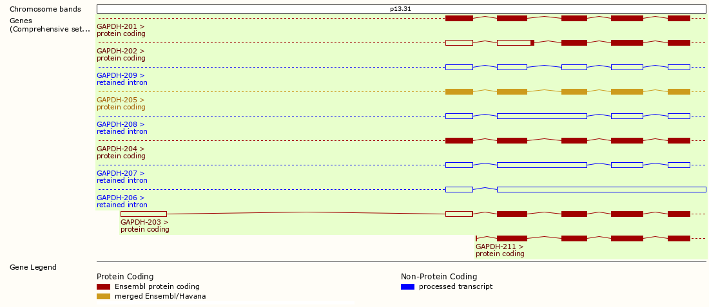
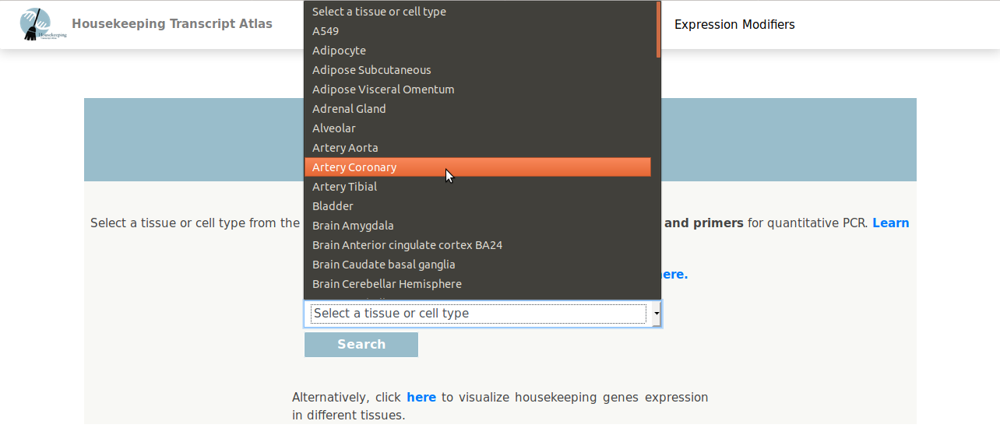
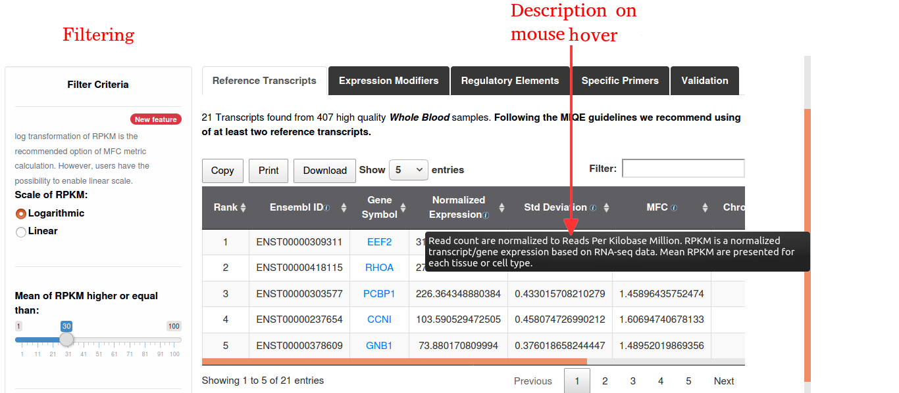
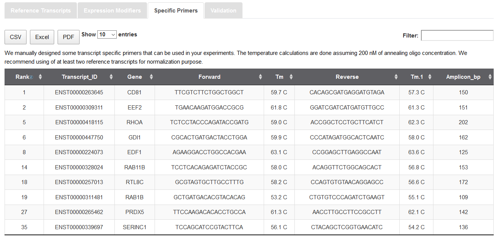
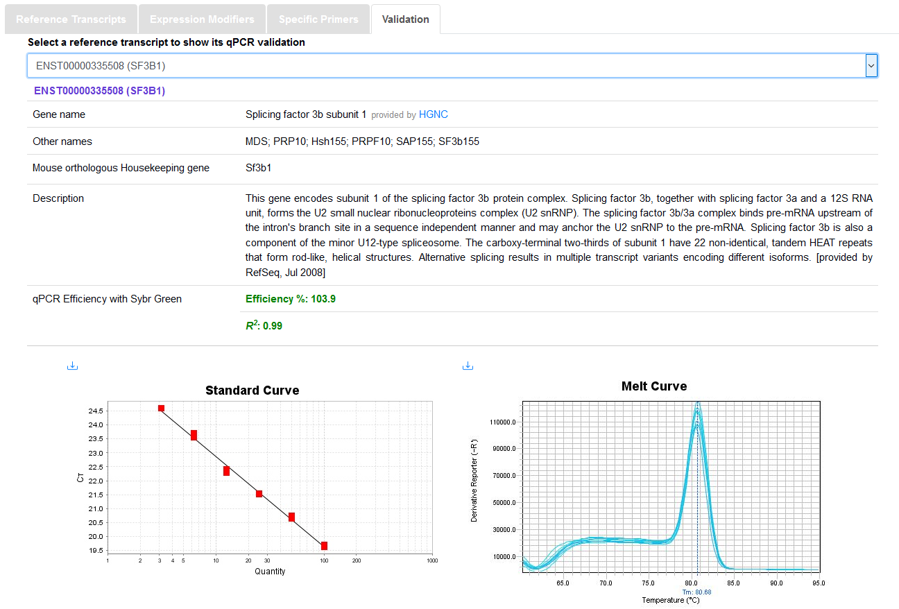
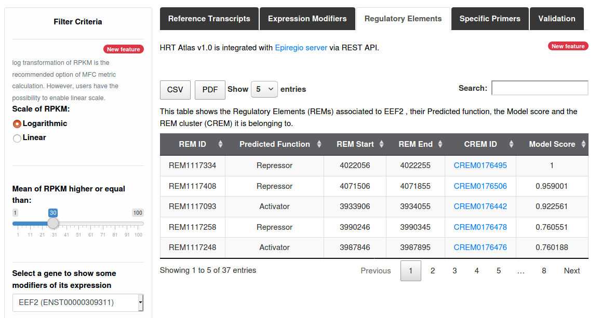
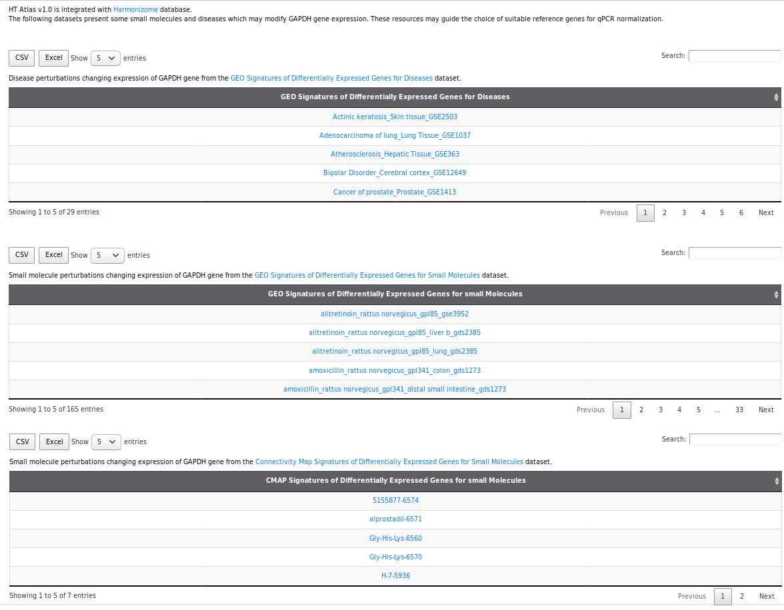
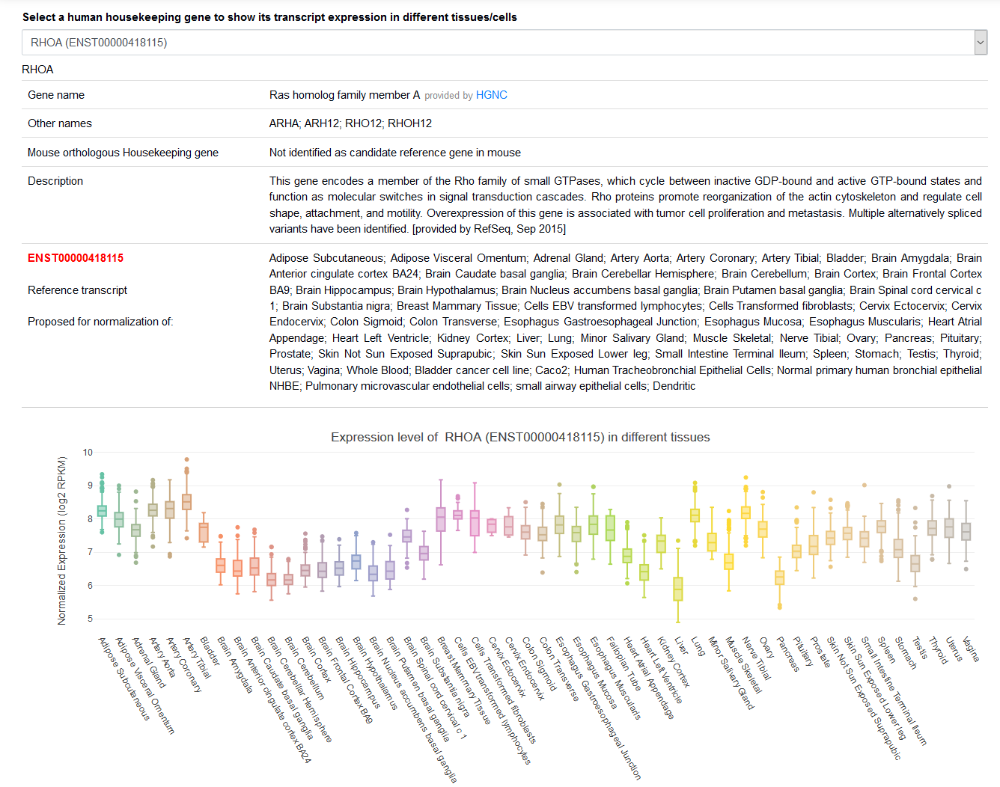
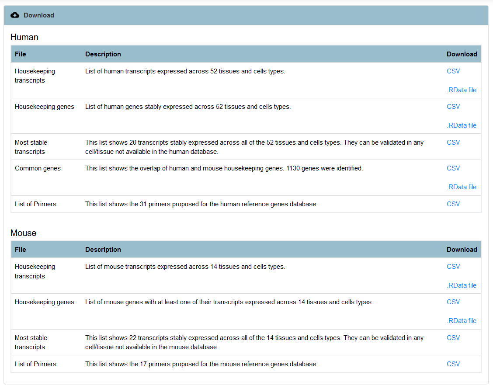
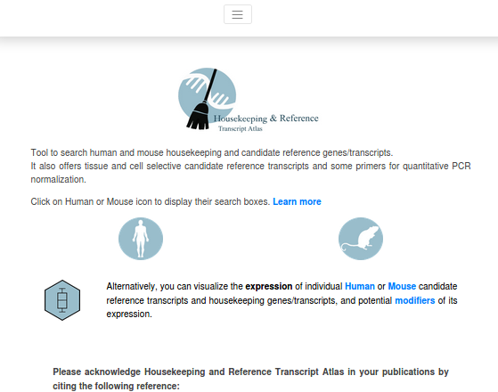

Housekeeping genes and reference genes/transcripts
Despite the importance of housekeeping genes in the calibration of gene expression (reference genes), as well as the understanding of many genomic and evolutionary features, important discrepancies have been observed in studies that previously identified these genes. HRT Atlas addresses some of the previously observed limitations in the identification of these genes, and offers a more accurate database of human and mouse housekeeping genes and tissue selective reference genes/transcripts.

Overview of Housekeeping and Reference Transcript Atlas pipeline
Housekeeping and Reference Transcript Atlas is a web-based tool with user-friendly interface for searching human and mouse housekeeping transcripts and genes. The workflow for the generation of the human database included the analysis of more than 11,000 high quality RNA-seq datasets, obtained from GTEx (version 7), a comprehensive public resource of tissue-specific gene expression. Data from 52 different tissue and cell types were obtained. In addition, data from 50 tissues and cell types were obtained from ARCHS4, a mining tool for public RNA-seq experiments. The generation of mouse database included the analysis of 507 high quality RNA-seq datasets manually curated from GEO database. Raw read counts were obtained from ARCHS4 repository. Samples of 14 tissues and cells types from wild type healthy control mice were included in the workflow.
Users can download a complete list of housekeeping transcripts and genes built from our analysis of more than 11,000 high quality human RNA-seq datasets and 507 mouse datasets. Alternatively, they can search for the most suitable candidate reference transcripts to normalize their qPCR experiments. These candidate reference transcripts represent the most stable transcripts for each of the different tissues or cell types available in our database (102 and 22 for human and mouse respectively). In addition, specific primers for some of these transcripts are also provided and validated following MIQE guidelines. In the download page, it also provides a short list of reference transcripts stably expressed at low variability in all of the tissue or cell types. This list is provided to normalize tissue or cell types that cannot be accessed from our database. As diseases and small molecules are known to affect gene expression variability, we also integrated and manually curated three functional associations datasets from Harmonizome database. These datasets show for each human housekeeping gene, a list of known diseases and molecules that can modify their expression stability (based on differential expression) and intend to guide users in the choice of suitable reference genes for qPCR normalization. In addition, HRT Atlas has been integrated with EpiRegio REST API. EpiRegio is a resource of Regulatory EleMents (REMs) that are able to regulate the expression of their target genes in different cell types and tissues.
In Housekeeping and Reference Transcript Atlas transcripts are identified by Ensembl ID (Ensembl annotation). Ensembl is an open access project that integrates gene annotation, comparative genomics, variant annotation and annotation of regulatory features of vertebrate genomes. A gene is a genomic locus where transcription occurs and which may have one or more protein-coding isoform and/or non-coding transcripts. In Ensembl annotation process, a gene includes any spliced transcripts with overlapping coding sequence. That way, transcripts clustered into the same gene differ in their genomic coordinates (transcription start and end sites), splice events and exons number and sequences. The image below shows an illustrative example of transcripts that belong to GAPDH. Non-coding transcripts are shown in blue. All other are transcripts are annotated protein-coding transcripts.

Transcript models of GAPDH
Housekeeping genes have been classically defined as genes that are required for the maintenance of essential functions of any cell type. Hence, they are expected to be constitutively expressed in all cells and at any development stage. In Housekeeping and Reference Transcript Atlas, a housekeeping gene is defined as a gene that has at least one of its protein-coding transcripts expressed in all cell types or tissues, with low variability (and non-zero level). Each of these transcripts may be specific to a subset of tissue or cell types. Transcripts belonging to these housekeeping genes are considered housekeeping transcripts. The housekeeping transcripts must have additionally a non-zero expression in all of the samples analyzed.
The following criteria were applied to select the list of housekeeping genes, which should fulfill all three criteria:
- The gene must be expressed at non-zero level in all tissue and cell types included in our analysis (52 and 14 cells and tissues for human and mouse respectively). This means that at least one of its transcripts must have an expression level higher than 1 RPKM (reads per kilobase million)
- Variability of gene expression should be low within all tissues and cell types, as evidence by a standard deviation of the log2 RPKM ≺ 1
- Maximum fold change (MFC), represented by the ratio between log2 of maximum and log2 of mean RPKM of any of its transcripts, must be lower than 2. Thus, only genes whose expression level in all samples fall within a very narrow range are classified as housekeeping genes.
We proposed the term reference transcript to define transcripts that are suitable for qPCR normalization in a particular tissue type. These transcripts were selected from the list of the newly described HK transcripts and have also a very low variability (log2 of maximum RPKM ≺ 2 x log2 of minimum RPKM and standard deviation ≺ 0.5) in specific tissue types, but not necessary in all of the tissues included in the database. Candidate reference transcripts stability was ranked based on mean RPKM, standard deviation of log2 RPKM and MFC value. Giving n transcripts, three intermediate scores (k=3) with equal weight are generated (score-1, score-2, and score-3 for RKPM, standard deviation and MFC, respectively for each transcript). Score-1 assigns n to the highest expressed transcript, estimated by mean RPKM, and 1 to the lowest expressed. Similarly, for score-2 and score-3 the highest scoring transcripts are the one that have the lowest standard deviation or the lowest MFC. Given sct,i the score of the transcript t for the i-th rank, we express the Score Product (SP) via the geometric mean:

The highest scoring transcript is one that has the highest SP and is assigned to the first position (rank = 1). That way, the n-th transcript is the one that has the lowest SP. The Score Product is proportional to the variability.
Data included in Housekeeping and Reference Transcript Atlas pipeline are provided in useful format and generated by GTEx and ARCHS4 workflows. Transcript read counts of healthy human tissues and cells types were extracted fom GTEx V7. For mouse data analysis, GEO series extracted from ARCHS4 HD5F format were manually curated to only include samples from wild type C57BL/6 healthy mice. Read counts were then extracted from ARCHS4 repository after the following additional restrictive criteria:
- Sequencing depth must be equal or higher than 20,000,000 reads
- Alignment rate provided by ARCHS4 must be higher than 70%
- Library layout must be generated from mRNA enrichment protocol
- Paired end read library must be constructed. This enables an accurate detection of transcript isoforms.
Read counts are then library-size normalized, and RPKM calculated using edgeR package in R environment. Lists of housekeeping genes and transcripts were generated based on the criteria described above (“Criteria for housekeeping genes and transcripts selection” section). The housekeeping transcript list was then used to provide a list of suitable references for qPCR experiment normalization for each tissue and cell type. Some transcripts specific primers were also designed. All of the generated matrixes were used to construct a SQLite database. Housekeeping and Reference Transcript Atlas is a web tool developed with Shiny package and hosted by Shiny Server. The application front-end is implemented by HTML, CSS and Bootstrap 4. All of the components were encapsulated in a deployable Docker container running on an Unix-based operating system with Apache HTTP server. Users instructions communicated to the container are processed by R and the request is sent to the SQLite database mounted as a container volume. Housekeeping and Reference Transcript Atlas offers a user friendly and reactive interface to provide the best using experience.
Screenshot of Housekeeping and Reference Transcript Atlas home page

Screenshot of search interface of human database
The search interface allows searching suitable reference transcripts for qPCR normalization by selecting one of the 82 tissues or cell types included in our database. By clicking on the search box, the full list of cells and tissues is automatically displayed on the screen ("Screenshot showing inputs of the search box").
From this interface users can also access and download the complete list of housekeeping transcripts and housekeeping genes as shown below. A similar interface is provided for mouse database.

Screenshot showing inputs of the search box
The search box provides an autocomplete option which makes easy the selection of tissue or cell type included in the database. This list is specific to the selected specie.

Screenshot of the results page
The results page shows the list of reference transcripts for the selected tissue or cell type. Each transcript is identified by its Ensembl code, followed by the gene symbol. The expression level of each transcript is expressed as the mean value of reads per kilobase million (RPKM) for the specific tissue or cell type. Variability and maximum fold-change are expressed as the standard deviation of the log2 RPKM, and the ratio of log2(maximum RPKM)/ log2(mean RPKM), respectively. By default, results are ranked by the criteria described above (“How results are ranked?” section). Alternatively, transcripts can be ranked by the user by clicking in the arrow next to any of these parameters. Users can select the number of transcripts to be shown per page, and then download the full list displayed on the screen in their preferred format (csv, Excel or Pdf). Finally user is allowed to filter de candidate reference transcript table by disabling the logarithmic normalization option. A minimum valor of RPKM can also be defined. The default is 30.

Screenshot showing specific primers table

Screenshot showing specific primers qPCR validation

Screenshot showing regulatory elements retrieved fom EpiRegio server.

Screenshot showing example of functional associations datasets extracted from Harmonizome database
From this section, users can access the following functional associations datasets extracted from Harmonizome database:- GEO Signatures of Differentially Expressed Genes for Diseases This dataset shows for a selected gene, a list of diseases that can induce its differential expression.
- GEO Signatures of Differentially Expressed Genes for Small Molecules It shows small molecule perturbations that can change the expression of a particular gene. Users must avoid using a gene for qPCR normalization purpose if their molecules of interest are listed in this dataset.
- Connectivity Map Signatures of Differentially Expressed Genes for Small Molecules It shows small molecules known to induce the differential expression of the selected gene. This gene must also be avoided for normalization of qPCR if the molecule of interest is listed.

Screenshot showing "Visualization" section
Users can access the Visualization page from the navigation bar. When available, they can access the description of a selected housekeeping gene, its official name and its synonymes retrieved from the NCBI's portal of gene-specific content based on RefSeq project. Gene expression across tissue and cell types is also provided.
Screenshot of download
Download page provides access to the complete list housekeeping genes and transcripts, and a list of most stable transcripts. Data may be saved in csv or RData format.

Screenshot from small device
Housekeeping and Reference Transcript Atlas is fully responsive in small and medium screen width. User can access all functionalities of the database from any size of screen.